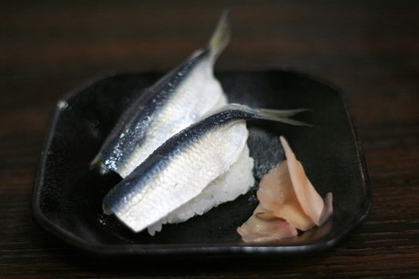
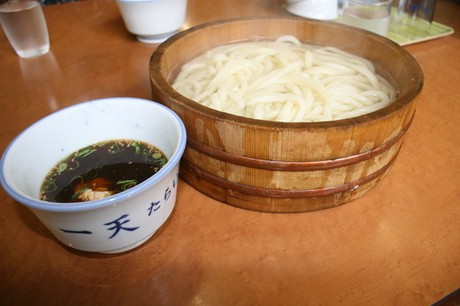
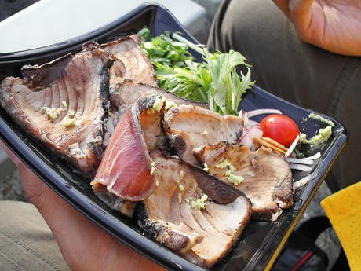
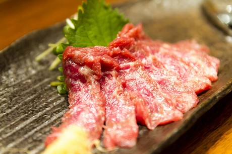
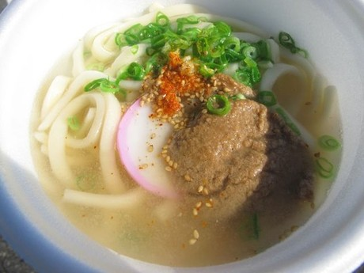
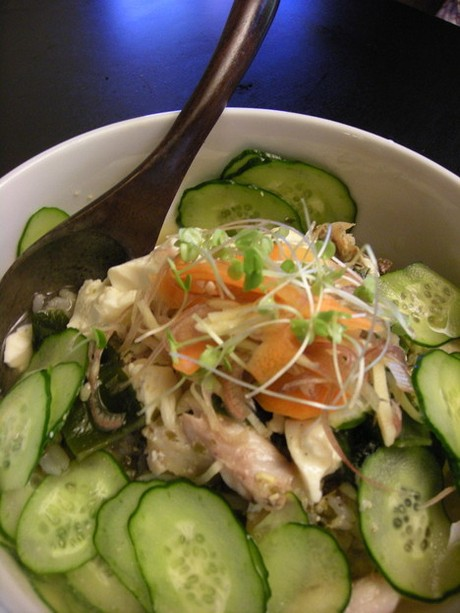

Comidas famosas de cada prefectura en Japón: Oeste y Sur
Esta es la segunda parte del articulo Comidas Famosas Ce Cada Prefectura En Japón. En la primera parte se incluyeron las prefecturas del Norte, Este y Centro de Japon donde vimos muchas sopas y caldos de la region mas fria de la isla pero ahora ¿qué tipos de comidas crees que veremos?
Advierto que el artículo tiene un vocabulario poco común del mundo culinario que desconocemos muchos de nosotros. De igual forma, aconsejo que tengas la mente dispuesta a ver definiciones en internet si es necesario. Aprendí bastantes cosas con este artículo.
Comidas de la Prefectura de Mie

Foto por Yohei Yamada
1. Ise Udon - Este plato consiste en un caldo hecho a base de salsa de soja concentrada y sake dulce que va sobre fideos udon gruesas.
2. Tekonezushi - Supuestamente fue enseñado a un pescador por Kobo Daishi. Bonito y arroz de sushi van de la mano para crear esta preparación.
3. Ise Ebi Ryouri (Comida de Langosta Ise) - Según el investigador, encontrar el ebi en Ise sabe muy bien.
Comidas de la Prefectura de Shiga

Imagen por Tokyofoodcast
1. Funazushi (Carpín) - Es envasado en sal durante un año y luego se seca y se mezcla con el arroz. Esta mezcla es luego fermentada otros tres años. Mmm, delicioso.
2. Kamo Nabe (Pato en Hot Pot) - Este plato consiste bueno en...pato en una olla caliente con otros ingredientes. En realidad, el pato es lo que hace que sea muy bueno.
3. Ayu No tsukudani - Esta comida son bebés ayu cocinados en salsa de soja dulce. Parece que va bien con el alcohol...creo.
Comidas de la Prefectura de Kyoto

Imagen por scriptedfate
1. Kaiseki Ryori (tradicional Cena con múltiples platos) - Esta comida no es necesariamente un solo plato, sino muchos. De hecho, eso es lo que este es el tipo de comida se trata. Es la tradicional cena de múltiples platos japonesa, que obviamente viene con múltiples comidas.
2. Kyou tsukemono (Encurtidos de Kyoto) - Estas son las salmueras hechas en Kyoto. Son conocidos por su sencillez y vienen en variedades diferentes.
3. Obanzai - Verduras del mar, berenjenas, arenque, bacalao, caballa salada, queso de soja, y daikon hervido.
Comidas de la Prefectura de Osaka

Imagen de: Yohei Yamashita
1. Okonomiyaki - Se trata de una especie de torta sabrosa con varios ingredientes, como repollo rallado, panceta de cerdo, pulpo, calamar, camarón, otros vegetales y otras cosas.
2. Takoyaki - Esta exquisitez de forma redonda se hacen con una pasta a base de harina de trigo y se llena de otras cosas deliciosas, especialmente de tako (pulpo), como también dejengibre, cebolla verde, y más. Una de las comidas más deliciosas del mundo.
3. Kitsune Udon (Udon de zorro) - Sencillamente es udon con aburage encima.
Comidas de la Prefectura de Hyogo

Foto por Paul Downey
1. Akashiyaki - Dumplings pequeño de la ciudad de Akashi. La pasta se hace de huevo y pulpo y se humedece en dashi antes de comer.
2. Carne de Kobe - Este plato no debería necesitar ninguna explicación, ya que es famoso en todo el mundo. Es carne de vaca de la raza tajima, criadas de acuerdo a una estricta tradición.
3. Ikanago no Kukini - Ikanago son peces pequeños. Son cocinados en salsa de soja, jengibre, mirin y azúcar para convertirlo en este plato. Cómelo con arroz y alcohol. Yummy ~
Comidas de la Prefectura de Nara

Foto por Wally Gobetz
1. Kaki no Ha Zushi - Este es un sushi prensado utilizando trozos de caballa. Están envueltos en hojas de caqui debido a sus propiedades antibacterianas.
2. Miwa Soumen - Simplemente Somen, pero Miwa es particularmente famoso por hacer somen, así que eso debe significar que es bastante rico.
3. Yamato no Chagayu - Esto es una especie de papilla de arroz que es aparentemente muy japonés... o muy viejo. No estoy seguro de cuál. Probablemente muy viejo, teniendo en cuenta que es la prefectura de Nara.
Comidas de la Prefectura de Wakayama

Foto por Yamaguchi Yoshiaki
1. Kujira no Tatsuta Age ( Ballena profunda frita) - Esta comida es carne de ballena rebosada y frita. (Oh Diossss suena muy ricoooo!)
2. Meharizushi - Una bola de arroz cubierto con un encurtido de hoja de mostaza. El sabor del encurtido y el onigiri (bolas de arroz) van muy bien juntos.
3. Kue Nabe- Esta es una nabe hecha de kue (longtooth grouper) . Incluye otros ingredientes tipo nabe también.
Comidas de la Prefectura de Tottori

Foto por tokyofoodcast
1. Matsubagani Ryouri - El Matsubagani es el "cangrejo de las nieves". Tiene brazos bien largos y muy sabrosos. Si estás en Tottori el Matsubagani es un plato que debes probar, en cualquiera de las formas cómo se prepara.
2. Kanijuu (sopa de cangrejos) - Más cangrejo! Esta vez en sopa.
3. Oyama Okowa - Este arroz se remoja por una noche y luego se cocina con varias cosas sabrosas. Parece una buena comida.
Comidas de la Prefectura de Shimane

Foto por Kuruman
1. Izumo Soba - Este es soba al estilo de Izumo. La parte interesante de este soba es que los granos se muelen aún con las cáscaras lo que hace que el sabor diferente ( y probablemente mejor ). Otra cosa que lo hace diferente es que se vierte la salsa sobre el soba en lugar de la inmersión de la soba en la salsa.
2. Shijimi Jiru - Caldo de almejas Shijimi, sazonado con salsa de soja / miso.
3. Taimeishi - Shimane es conocida por su plato de arroz Tai, donde el tai se pone junto con el arroz. Parece casi perfecto.
Comidas de la Prefectura de Okayama

Foto via photozou.jp
1. Okayama Barazushi - Ricos y frescos mariscos con verduras en la parte superior del arroz de sushi.
2. Hiruzen Okowa - arroz al vapor con frijoles rojos. Supuestamente este plato se produjo cuando alguien mezcló accidentalmente los frijoles rojos con el arroz pensando que era otra cosa.
3. Mamakari Zushi - El mamakari es de la familia sardinela y en este caso se hace en sushi. Las mejores épocas para comerlo son apenas empezando el verano y en otoño.
Comidas de la Prefectura de Hiroshima

Foto por Austin keys
1. Hiroshima Okonomiyaki - Lo peculiar del Okonomiyaki de Hiroshima es que en lugar de mezclar los ingredientes lo van haciendo por capas, haciendo las cosas un poco más altas, especialmente teniendo en cuenta que utilizan 3.4 veces más repollo. Es como un Okonomiyaki x4.
2. Kaki Ryouri (Cocción de Ostras) - Si estás en Hiroshima, encuentra algún plato con ostras. Probablemente será bueno.
3. Anago Meshidon (Anguila en un Plato de Arroz) - El plato consiste en Anguila “conger” encima del arroz. (No tienen hambre ya??)
Comidas de la Prefectura de Yamaguchi

Foto por buck82
1. Fugu Ryouri (Pezglobo) - ¿Quieres poner tu vida al borde del abismo? Entonces come pez globo. Es bien conocido en Yamaguchi, así que si vas intentar comerlo, aquí sería una buena opción.
2. Fugu Sashi (Rebanadas de fugu) - Es fugu finamente cortado como sashimi. Apuesto que vale la pena el riesgo.
3. Shirouo Ryouri - El “ice goby” es un pequeño pez pequeño. La prefectura de Yamaguchi es conocida por cocinarlo bien.
Comidas de la Prefectura de Tokushima

Foto via photozou
1. Sobagome Zosui - Este es el grano de trigo sarraceno que se ha hecho en una papilla espesa. Dado que el arroz no es adecuado para crecer en esta región el trigo sarraceno es bastante grande. Esta avena se sirve con varias coberturas e ingredientes.
2. Tarai Udon - Este plato consiste en udon que se coloca en un recipiente de madera lleno de agua caliente. Para comerlo, sacas el udon del plato y lo sumerges en la salsa de acompañamiento, algo así como lo harías que con soba, pero aquí es con udon.
3. Iya Soba - Iya es un distrito de Tokushima, donde hacen un soba que se pone en caldo de sopa de iroko junto con otros ingredientes encima.
Comidas de la Prefectura de Kagawa

Foto por Nobuhiro Nikushi
1. Sanuki Udon - Sanuki es como se llamaba antes la Prefectura de Kagawa, así que esto es básicamente “Udon de Kanagawa”. Con el Sanuki udon, por lo general vienen fideos udon servidos al dente con un caldo de atún y alga marina.
2. Shippoku Udon - Este es un udon preparado con un montón de verduras y sirve a menudo en invierno. Las verduras se hierven primero y se ponen encima de los fideos. Suena rico.
3. Iriko Meshi - Este plato es sencillamente sardina encima de y cocinada con arroz.
Comidas de la Prefectura de Ehime

Foto por Joel Abroad
1. Uwajima Tai Meshi - Este es un plato de arroz hecho con Tai que se sirve en el distrito de Uwajima de Ehime. Si estás en Uwajima asegúrate de buscarlo.
2. Jakoten - Este pastel está hecho de pequeños peces que se mezclan hasta formar una pasta para luego freirla. Básicamente, se trata de un pastel de pescado hecha de Hotarujako, un pequeño pez blanco, aunque es difícil darse cuenta de ello ya que están todos mezclados en una torta.
3. Satsuma-jiru - Este es un cerdo con sabor a estofado de verduras / sopa de miso.
Comidas de la Prefectura de Kouchi

Foto via photozou
1. Katsuo no Tataki - Es pescado “bonito” chamuscado que ha sido cortado. Al parecer es bueno crudo, pero sabe mejor chamuscado. Se come con jengibre rallado (y otras cosas también, dependiendo de la zona).
2. Sawachi Ryouri - Tradicionalmente esta comida famosa consistia en sashimi y sushi, pero recientemente otros tipos de alimentos se han incluido. Básicamente, es un montón de comida que se sirve en un plato enorme (llamado Sawachi).
3. Katsuo no Tosazukuri - Esta es otra versión del # 1, Katsuo no Tataki. Los dos son bastante similares, posiblemente el mismo, pero debes comer ambos de todas formas.
Comidas de la Prefectura de Fukuoka

Foto por Ashely Thredgold
1. Mentaiko - Son huevas marinadas de abadejo. Vino originalmente de Corea, aunque al parecer la versión japonesa es un poco diferente. En su dia, fue nominada como el plato número uno de Japón en el Shuukan Bushun.
2. Motsu Nabe - Este plato nabe está hecho de menudencias de carne de res o de cerdo, que suelen ser intestinos de res.
3. Tori no Mizutaki - Este es otro plato nabe, solo que esta vez tiene verduras y pollo.
Comidas de la Prefectura de Saga

Foto por Hajime Nakano
1. Yobiko no Ika Ryouri (Calamar de Yobiko) - Yobiko es una ciudad en la prefectura de Saga. Al parecer, hacen buenos calamares. A disfrutar comiendo calamar!
2. Mutsugurou no kabayaki ( “Mudskipper” al carbon) - Suena como “mudskipper” al carbon. Pero...¿Qué es un mudskipper? Bueno, es un pez de humedales que es anfibio y puede caminar en la tierra usando sus aletas.
3. Dagojiru - Es una sopa que tiene fideos, pollo, y muchos tipos de verduras en ella. Un plato bueno para aumentar la energía, sobre todo en invierno, me imagino.
Comidas de la Prefectura de Nagasaki

Imagen por Kengo
1. Sara Udon / Chanpon - Literalmente udon "plato" y es asi cuando se pone una base de fideos en un plato, luego se cubre con coles, brotes de soja, otras verduras, calamar, gambas, carne de cerdo, y mas. Si se utiliza fideos gruesos se llama Chanpon, pero son muy similares además de eso.
2. Shippoku Ryori - Este es un tipo de cocina que viene de banquetes formales tradicionales de la antigua China. Mesas circulares se arreglan con delicias japonesas y chinas, así como alimentos introducidos por los comerciantes europeos. Recuerda que Nagasaki fue el único contacto que Japón tenía con el mundo exterior durante mucho tiempo, por lo que tiene mucha influencia internacional!
3. Hamburguesa Sasebo - Se trata de una hamburguesa de Sasebo. Esta receta proviene de la marina estadounidense y fue transmitida a Japón, donde finalmente se hizo famosa.
Comidas de la Prefectura de Kumamoto

Imagen tomada por yasa_
1. Basashi - caballo en rodajas. Sí, se puede comer sashimi de caballo en Japón.
2. Ikinari Dango - bollos al vapor con trozos de camote en la masa. Por dentro tiene anko (pasta de frijol rojo).
3. Karashirenkon (Raiz de la Mostaza de loto) - Karashi es un tipo de mostaza picante. Renkon es la raíz del loto. Colócalos juntos y Voilà!! Tienes karashirenkon. Asegúrate de cortarlo antes de comerlo. No se come como un perro caliente.
Comidas de la Prefectura de Oita

Imagen via photozou
1. Buri no Atsumeshi - se sirven Rebanadas de jurel crudo que ha sido marinad en una salsa de soja / azúcar / vinagre / sake. La mezcla se sirve con arroz caliente. También se incluyen alimentos como cebolla verde, nori y semillas de sésamo.
2. Gomadashi Udon - Este plato es pescado que está a la parrilla y se mezcla con las semillas de salsa de soja y sésamo trituradas. Por último se coloca sobre udon.
3. Tenobe Dango Jiru - Estos son dumpling extendidos a mano y servidos en un caldo bien sabroso. (En este punto ya debes tener hambre como yo)
Comidas de la Prefectura de Miyazaki

Imagen via photozou
1. Miyazaki no Sumibiyaki - Esta comida es carne de pollo que está cortada y asada al carbón hasta que quede negra. El sabor carbonizado es lo que da un buen sabor.
2. Hiyajiru - Pequeño pescado a la parrilla y aplastado. Luego es mezclado con semillas de sésamo y miso. Por último se coloca en una sopa de pepinos con pepinos.
3. Chicken Nanban - Este es un pollo frito estilo Kyushu que ha sido marinado brevemente en una salsa agridulce-salado-salsa picante llamada nanban (de ahí el nanban).
Comidas de la Prefectura de Kagoshima

Imagen por Hajime Nakano
1. Tori Meshi - Es el arroz de pollo con varios ingredientes encima.
2. Kibinago Ryouri - Este es un pequeño pez de plata que vive de Kagoshima. Hay muchas maneras de comer, pero los más comunes son como sashimi junto con un dip de miso. Otras formas incluyen a la parrilla, a fuego lento, muy frito y en sopas.
3. Tonkotsu Ryouri - Tonkotsu es la carne de cerdo que se cocina muy lento para que quede bien suave. Es muy deliciosa como todos los platos en Kagoshima.
Comidas de la Prefectura de Okinawa

Imagen por Takashi Kiso
1. Soki Soba - Este soba se sirve con costillas de cerdo guisadas con el cartílago unido.
2. Goya Chanpuru - Consiste en tofu combinado con verduras, carne o pescado (y a veces con spam). El melón amargo parece ser un vegetal muy común aquí.
3. Rafutee - Vientre de cerdo que es tierna, suculenta, y con mucho como tocino. Se sazona con un caldo de jengibre, awamori, y agua.
Espero les haya gustado el artículo. Ha sido un verdadero reto el escribirlo (o ¿más bien tortura? jeje) pues en el tiempo que lo escribía no tuve comida cerca :( En fin, espero les sirva como guia para los que estan en Japón o para los que piensen ir algun dia. Si hay algún plato que terminaste probando o ya probaste, coméntanos!
Tomado de TF
Ilustración principal por Mafe Fernández
Artículos Relacionados
Comidas famosas de cada prefectura en Japón: Norte, Este y Centro
10 platos de comida japonesa que deberías recomendar a tus amigos